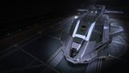

Оружейные точки
1L 4M 2S (семь креплений)
Семь оружейных точек вмещают две малые пушки Гаусса Стражей, ряд средних мультипушек AX и осколочных пушек. Распределитель класса 7 питает все орудия без перебоев. Три военных отсека дополняют броню линкора пакетами защиты модулей Стражей — они позволяют пережить молнии таргоидов. Цена такой защиты — неповоротливость. Gunship медленный, разворачивается как баржа и с трудом удерживает Перехватчик в прицеле неподвижных пушек Гаусса. Уклоняться, как Chieftain, он тоже не может. По живучести он превосходит другие средние корабли, но победа и выживание даются ему нелегко.

Оценка пригодности корабля по шкале 1–100 отражает его возможности с полным набором инженерных улучшений по сравнению со всеми кораблями этой роли. Подробнее: как оцениваются корабли.
Federal Gunship подходит к боям с ксеносами так же, как ко всему остальному: стоит стеной. На семи оружейных точках (одной большой, четырёх средних и двух малых) помещается больше отдельных орудий AX, чем на любом другом популярном среднем корабле. Две малые пушки Гаусса Стражей, средние мультипушки AX и осколочные пушки Стражей на остальных точках. Мощный распределитель питания класса 7 снабжает прожорливые орудия без перебоев. Три военных отсека и базовая броня 630 позволяют установить пакеты защиты модулей Стражей, с которыми молнии таргоидов из смертельной угрозы превращаются в помеху.
Не хватает подвижности: Gunship медленный и плохо поворачивает, а бой с таргоидами требует обратного — следить за обнажёнными сердцами Перехватчика неподвижными пушками Гаусса, а затем уходить от молний и роя ракет. Gunship вместо этого держит позицию: встаёт перед таргоидом, принимает урон защищёнными модулями и давит непрерывным огнём. Это танк, а не дуэлянт. Пилоту, который предпочитает пережить Перехватчик, а не переманеврировать его, эта прочная и терпимая к ошибкам платформа AX подойдёт. Изящества от неё не ждите.
Бой с таргоидами с удержанием позиции: зоны конфликта AX, противостояние Разведчикам и Перехватчикам, операции у края Водоворота, где защищённые модули Стражей и прочный корпус важнее манёвренности.
Четыре причины, по которым Gunship подходит для охоты на ксеносов :
Корабль медленный и неповоротливый. Пушки Гаусса с неподвижным креплением — стандарт вооружения AX — нужно удерживать на движущихся сердцах, а Gunship с трудом держит Перехватчик в прицеле или уходит от роя. Большинство его точек средние и малые, поэтому в расчёте на одну точку огневая мощь уступает Krait с большими точками. Он держится за счёт защиты и стойкости, а не уклонения или разового урона. В бою AX это танк, а не ударный корабль.
Семь точек и три военных отсека, усиленные модулями Стражей, на корпусе с бронёй 630 делают его средним танком AX. Но 171 м/с и управляемость баржи ограничивают оценку 82 баллами.
Итоговая оценка 82/100 показывает, как корабль отвечает требованиям роли AX в порядке их важности. У каждого критерия есть вес (доля от 100). Корабль получает часть баллов в зависимости от результатов на фоне остальных. Сумма баллов даёт итоговую оценку.
| Критерий | Баллы | Почему столько |
|---|---|---|
| Точки для пушек Гаусса | 23/25 | Семь точек (1L 4M 2S) дают самый широкий набор AX среди средних кораблей. Но пушки Гаусса Стражей занимают только две малые точки, а на большой стоит улучшенная мультипушка AX. По числу пушек Гаусса Gunship уступает кораблям Krait с большими точками. |
| Теплоёмкость и контроль нагрева | 16/20 | Мощный распределитель класса 7 справляется с расходом энергии пушек Гаусса и осколочных пушек, а четыре внешних крепления вмещают теплоотводные катапульты. Но тяжёлый корпус не отличается низким нагревом, и за температурой нужно следить. |
| Живучесть корпуса и место для усилений | 20/20 | Базовая броня 630 уровня линкора, три военных отсека класса 4 и просторные дополнительные отсеки 6/6/5 дают место пакетам защиты модулей и усиления корпуса Стражей. Они поднимают эффективную броню выше 3,800 — лучшая защита среди средних кораблей в этой роли. |
| Манёвренность | 13/25 | Скорость 171/282 м/с и поворотливость баржи мешают удерживать сердца Перехватчика в прицеле неподвижных пушек Гаусса и уклоняться от молний и роя. Даже грязная настройка двигателей прибавляет совсем немного — это явное ограничение. |
| Защита от коррозии и вспомогательные отсеки | 10/10 | Четыре внешних крепления и просторные дополнительные отсеки (6/6/5/2/2/1) вмещают катапульту поглотителей коррозии, дрон очистки, блок авторемонта и даже ангар истребителя 6D. Места хватает и для удаления коррозии, и для приманки. |
| Взвешенный итог | 82/100 | Совпадает с общей оценкой пригодности этого корабля для роли. |
Веса отражают редакционный порядок важности критериев, а не игровую формулу. Длина полосы показывает, насколько выполнен критерий. Длинные полосы дали больше всего баллов, короткие показывают, где корабль их потерял. Подробнее: как оцениваются корабли.
В каждой таблице корабли оцениваются именно в бою с таргоидами, с разбивкой по размеру посадочной площадки. Столбец Оружейные точки показывает набор оружейных точек: сколько креплений доступно для пушек Гаусса. Оценка пригодности дана по той же шкале 1–100, что и на остальных страницах.
| Корабль | Класс | Оружейные точки | Плюсы и минусы | Оценка |
|---|---|---|---|---|
| Alliance Chieftain | Средняя | 2L 1M 3S | Выше оценка; манёвренность; нагревТочки для пушек Гаусса | 90 |
| Krait Mk II | Средняя | 3L 2M | Выше оценка; точки для пушек Гаусса; манёвренностьЖивучесть корпуса | 89 |
| Alliance Challenger | Средняя | 1L 3M 3S | Выше оценка; живучесть корпуса; защита от коррозииМанёвренность | 88 |
| Corsair | Средняя | 3L 3M | Выше оценка; точки для пушек Гаусса; манёвренностьЖивучесть корпуса | 84 |
| Krait Phantom | Средняя | 2L 2M | Выше оценка; манёвренность; нагревЖивучесть корпуса | 84 |
| Python Mk II | Средняя | 4L 2M | Выше оценка; точки для пушек Гаусса; защита от коррозииЖивучесть корпуса | 84 |
| Federal Gunship этот | Средняя | 1L 4M 2S | — рассматриваемый корабль (точка отсчёта) | 82 |
| Python | Средняя | 3L 2M | Живучесть корпуса; защита от коррозииНиже оценка; манёвренность | 80 |
| Alliance Crusader | Средняя | 1L 2M 3S | Живучесть корпуса; нагревНиже оценка; манёвренность | 79 |
| Federal Assault Ship | Средняя | 2L 2M | Манёвренность; живучесть корпусаНиже оценка; точки для пушек Гаусса | 77 |
| Federal Dropship | Средняя | 1L 4M | Защита от коррозии; точки для пушек ГауссаНиже оценка; манёвренность | 73 |
| Mamba | Средняя | 1H 2L 2S | Манёвренность; нагревНиже оценка; живучесть корпуса | 70 |
| Fer-de-Lance | Средняя | 1H 4M | Манёвренность; точки для пушек ГауссаНиже оценка; живучесть корпуса | 68 |
Оценены 13 кораблей AX для средней площадки. Лидирует Alliance Chieftain (90). Любой соперник в этом списке может сесть туда же, так что сравнивать при покупке стоит прежде всего с ними.
| Корабль | Класс | Оружейные точки | Плюсы и минусы | Оценка |
|---|---|---|---|---|
| Imperial Cutter | Большая | 1H 2L 4M | Выше оценка; точки для пушек Гаусса; нагревМанёвренность | 90 |
| Anaconda | Большая | 1H 3L 2M 2S | Выше оценка; точки для пушек Гаусса; живучесть корпусаМанёвренность | 88 |
| Federal Corvette | Большая | 2H 1L 2M 2S | Выше оценка; живучесть корпуса; нагревМанёвренность | 86 |
| Type-10 Defender | Большая | 4L 3M 2S | Выше оценка; живучесть корпуса; защита от коррозииМанёвренность | 86 |
Оценены 4 корабля AX для большой площадки. Лидирует Imperial Cutter (90). Им нужны площадки побольше и бюджет повыше. По показателям они превосходят Gunship, но относятся к другому классу.
| Корабль | Класс | Оружейные точки | Плюсы и минусы | Оценка |
|---|---|---|---|---|
| Kestrel Mk II | Малая | 3L 2S | Манёвренность; точки для пушек ГауссаНиже оценка; защита от коррозии | 60 |
| Cobra Mk V | Малая | 3M 2S | Манёвренность; точки для пушек ГауссаНиже оценка; защита от коррозии | 50 |
| Vulture | Малая | 2L | Живучесть корпуса; манёвренностьНиже оценка; точки для пушек Гаусса | 44 |
Оценены 3 корабля AX для малой площадки. Лидирует Kestrel Mk II (60). Эти корпуса дешевле и садятся на меньшие площадки. По показателям они уступают Gunship и относятся к другому классу.
При цене ~36 млн кр. корпус относится к среднему ценовому диапазону, но для покупки нужен ранг Федерации — главный старшина. У Krait и кораблей Альянса такого требования нет. Полная сборка с оружием AX и Стражей, защитой модулей Стражей, усилением корпуса и щитом обходится примерно в 110 млн кр. Значительную часть оснащения нельзя просто купить: сначала нужно открыть технологии Стражей.
Невысокая страховка — около 4.1 млн кр. с улучшениями — полезное преимущество. В боях AX корабли часто гибнут, и Gunship дешевле выкупить, чем большие корпуса. На нём удобно учиться, если готовы мириться с его массой.
Кредитов нужно не так много; настоящая цена — время на открытие технологий Стражей. Планируйте получение чертежей для оружия и защиты модулей Стражей ещё до покупки корпуса. Сама страховка одна из самых низких среди кораблей AX.
Защищённая сборка танка AX: много видов оружия AX с распределителем класса 7, пакеты Стражей для защиты модулей в трёх военных отсеках и средства от коррозии и перегрева на внешних креплениях. Начальная сборка требует только покупки: оружие AX и Стражей надо открыть, поэтому корпус поначалу пуст. В сборке класса A появляется это оснащение, а инженерные улучшения повышают подвижность, улучшают теплоотвод и усиливают щит.
| Отсек | Начальная · только покупка | Класс A · без улучшений | С инженерными улучшениями | Примечания |
|---|---|---|---|---|
| Оружейные точки | ||||
| Большая 1 | — | 3C Улучшенная мультипушка AX (на карданном подвесе) | (нет чертежа улучшения) | На самой большой точке стоит улучшенная мультипушка AX на карданном подвесе: даже неповоротливый корабль может попадать в маневрирующий Перехватчик. |
| Средняя 1 | — | 2E Улучшенная мультипушка AX (на карданном подвесе) | (нет чертежа улучшения) | Улучшенная мультипушка AX на карданном подвесе: непрерывный урон ксеносам без необходимости точно удерживать прицел. |
| Средняя 2 | — | 2E Улучшенная мультипушка AX (на карданном подвесе) | (нет чертежа улучшения) | Вторая улучшенная мультипушка AX на карданном подвесе удваивает среднюю батарею AX. |
| Средняя 3 | — | 2A Осколочная пушка Стражей (неподвижная) | (нет чертежа улучшения) | Осколочная пушка Стражей наносит большой разовый урон открытым сердцам вблизи. Крепление неподвижное: стреляйте, когда удерживаете позицию рядом с целью. |
| Средняя 4 | — | 2A Осколочная пушка Стражей (неподвижная) | (нет чертежа улучшения) | Вторая осколочная пушка Стражей усиливает залп по сердцам. |
| Малая 1 | — | 1D Пушка Гаусса Стражей (неподвижная) | (нет чертежа улучшения) | Пушка Гаусса Стражей — стандарт вооружения AX. Крепление только неподвижное: зарядите орудие, наведя его на открытое сердце. |
| Малая 2 | — | 1D Пушка Гаусса Стражей (неподвижная) | (нет чертежа улучшения) | Вторая пушка Гаусса Стражей для парного залпа по сердцам. Обе малые точки отданы пушкам Гаусса. |
| Внешние крепления | ||||
| Крепление 1 | — | 0C Ксеносканер | (нет чертежа улучшения) | Продвинутый ксеносов Сканер показывает тип таргоида и число сердец. Чертежей для сканеров нет. |
| Крепление 2 | — | 0I Катапульта поглотителей коррозии | G1 Боезапас (без экспериментального эффекта) | Необязательный модуль низкого приоритета. Улучшение боезапаса добавляет заряды поглотителей, которые устраняют действие коррозии в боях с таргоидами. |
| Крепление 3 | — | 0I Теплоотводная катапульта | G1 Боезапас (без экспериментального эффекта) | Необязательный модуль низкого приоритета. Улучшение боезапаса добавляет заряды катапульты. Сбрасывает тепло при скрытном ходе и помогает охладиться между применениями теплоотвода. |
| Крепление 4 | — | 0A Усилитель щита | G5 Теплостойкий + Суперконденсаторы | Усилитель щита с чертежом теплостойкости усиливает защиту от теплового огня таргоидов. |
| Основные модули | ||||
| Обшивка | Лёгкий сплав | Военный композит | G5 Усиленная конструкция + Глубокая обшивка | |
| Электростанция | 6E Электростанция | 6A Электростанция | G5 Перегрузка + Рассеивание тепла | Питает целую батарею орудий и истребитель. Перегрузка даёт запас мощности, а рассеивание тепла отводит лишний нагрев. |
| Маневровые двигатели | 6E Маневровые двигатели | 6A Маневровые двигатели | G5 Грязная настройка двигателей + Форсированные двигатели | Класс A + грязная настройка двигателей возвращают немного манёвренности, насколько позволяет тяжёлый корпус. |
| Рамочно-сместительный двигатель (FSD) | 5E Рамочно-сместительный двигатель (FSD) | 5A Рамочно-сместительный двигатель (FSD) | G5 Увеличенная дальность + Управление массой | Класс A с эффектом Увеличенная дальность помогает добраться до далёких Водоворотов. Управление массой компенсирует тяжёлое оснащение. |
| Система жизнеобеспечения | 5E Система жизнеобеспечения | 5D Система жизнеобеспечения | G5 Облегчённый (без экспериментального эффекта) | Класс D экономит массу; Облегчённый облегчение снижает её ещё сильнее. У системы жизнеобеспечения нет экспериментального эффекта. |
| Распределитель питания | 7E Распределитель питания | 7A Распределитель питания | G5 Ускоренная зарядка + Сверхпроводники | Ставьте распределитель класса 7 с рейтингом A в ПЕРВУЮ очередь. Пушки Гаусса и осколочные пушки быстро опустошают конденсатор оружия, а ускоренная зарядка и сверхпроводники поддерживают питание. |
| Сенсоры | 5E Сенсоры | 5D Сенсоры | G5 Облегчённый (без экспериментального эффекта) | Понизьте рейтинг до D и облегчите модуль. Дальность сенсоров для AX не нужна, так что сэкономьте массу. |
| Топливный бак | 4C Топливный бак | 4C Топливный бак | (нет чертежа улучшения) | Штатный бак класса C. Его объём фиксирован, инженерных улучшений нет. |
| Военные отсеки | ||||
| Военный отсек 1 | — | 4D Пакет защиты модулей Стражей | (нет чертежа улучшения) | Пакет защиты модулей Стражей — ключевая защита от молний. Оснащение Стражей нельзя улучшать у инженеров. |
| Военный отсек 2 | — | 4D Пакет защиты модулей Стражей | (нет чертежа улучшения) | Второй пакет защиты модулей Стражей. Несколько пакетов эффективнее распределяют пробивающий урон от молний между модулями. |
| Военный отсек 3 | — | 4D Пакет усиления корпуса Стражей | (нет чертежа улучшения) | Пакет усиления корпуса Стражей повышает эффективную броню с сопротивлением коррозии. Инженерных улучшений нет. |
| Дополнительные отсеки | ||||
| Класс 6 | — | 6C Генератор двухконтурного щита | G5 Теплостойкий + Быстрая зарядка | Двухконтурный щит быстро восстанавливается под огнём. Теплостойкость и быстрая зарядка помогают выдержать тепловой урон таргоидов. |
| Класс 6 | — | 6D Ангар для истребителя | (нет чертежа улучшения) | Ангар добавляет ещё одно орудие и приманку, отвлекающую таргоидов. Ангары нельзя улучшать у инженеров. |
| Класс 5 | — | 5D Пакет усиления корпуса Стражей | (нет чертежа улучшения) | Самый большой пакет усиления корпуса Стражей даёт броню с сопротивлением коррозии, инженерных улучшений нет. |
| Класс 2 | — | 1E Контроллер дронов очистки | (нет чертежа улучшения) | Модуль очистки: контроллер дронов снимает коррозию между сбросами тепла; у контроллеров дронов нет чертежей. |
| Класс 2 | — | 2A Блок авторемонта (AFMU) | G5 Защищённый (без экспериментального эффекта) | Необязательный модуль низкого приоритета. Защита укрепляет Блок авторемонта (AFMU). Этот блок чинит модули между боями. |
| Класс 1 | — | 1E Грузовой стеллаж | (нет чертежа улучшения) | Необязательный модуль. Увеличивает грузовое пространство, пригодится для перевозок. Грузовые стеллажи нельзя улучшать у инженеров. |
| Планировщики и экспорт | ||||
| Открыть в Coriolis | открыть | открыть | открыть | Открывает сборку на coriolis.io одним нажатием. |
| Открыть в EDSY | открыть | открыть | открыть | Открывает сборку на edsy.org одним нажатием. |
| Скопировать SLEF | Копирует необработанные данные оснащения для этого варианта в формате SLEF. | |||
Пушки Гаусса и осколочные пушки быстро опустошают конденсатор оружия. Прежде всего поставьте распределитель класса 7 с рейтингом A, иначе огонь будет прерываться. Затем заполните военные отсеки пакетами Стражей для защиты модулей. Это разница между потерей двигателя от молнии таргоида и возможностью её пережить. Внимательно следите за нагревом.
Получите ранг главного старшины, купите корабль и откройте оружие Стражей и AX в соответствующих местах — оружие AX нельзя просто купить.
Начальная сборка идёт со штатной легкосплавной обшивкой и базовыми основными модулями: 6E электростанция и маневровые двигатели, 5E FSD, системы жизнеобеспечения и сенсоры, 7E распределитель питания и 4C топливный бак. Базовая броня всего 630.
На этом этапе не заняты оружейные точки, внешние крепления, военные и дополнительные отсеки. Для улучшенных мультипушек AX, осколочных пушек и пушек Гаусса Стражей, пакетов защиты модулей и усиления корпуса, двухконтурного щита и средств от коррозии и перегрева сначала нужно открыть технологии Стражей и AX. Обшивка из военного композита покупается за кредиты, без разблокировки. Но, как и модули класса A, его ставят на этапе улучшений, а не сразу при покупке.
Приоритеты оснащения AX:
Gunship не может уклоняться, поэтому полагается на защиту. Сначала поставьте распределитель для непрерывного огня, обшивку из военного композита под щитом и пакеты защиты модулей Стражей, которые сбережёт маневровые двигатели и орудия под молниями таргоидов.
Инженерные улучшения для AX повышают подвижность, улучшают теплоотвод и усиливают живучесть. Возможности улучшать оружие AX и Стражей ограничены. Felicity Farseer (при максимальном уровне доступа) предлагает чертёж для FSD. Закрепите чертежи для дистанционных улучшений от G1 до G5.
| Модуль | Чертёж | Экспериментальный эффект | Инженер |
|---|---|---|---|
| Электростанция (6) | Перегрузка (G5) | Рассеивание тепла | Hera Tani |
| Маневровые двигатели (6) | Грязная настройка двигателей (G5) | Форсированные двигатели | Professor Palin / Mel Brandon |
| Рамочно-сместительный двигатель (FSD) (5) | Увеличенная дальность (G5) | Управление массой | Felicity Farseer |
| Распределитель питания (7) | Ускоренная зарядка (G5) | Сверхпроводники | The Dweller |
| Двухконтурный щит (6) | Теплостойкий (G5) | Быстрая зарядка | Lei Cheung |
| Усилитель щита | Теплостойкий (G5) | Суперконденсаторы | Didi Vatermann |
| Оружие AX и Стражей и усиление Стражей | Инженерных улучшений нет (технологии Стражей и AX только разблокируются) (—) | — | — |
| Обшивка | Усиленная конструкция (G5) | Глубокая обшивка | Selene Jean |
Умеренные затраты на инженерные улучшения корабля, но много работы для открытия оружия и усилений Стражей. Именно технологии Стражей требуют больше всего времени. Чертежи корабля стандартные. При необходимости запросите точное количество по отдельным чертежам или разблокировкам.
Примерные изменения в трёх вариантах сборки (цифры ориентировочные, не точные значения):
| Показатель | Начальная | Класс A | С инженерными улучшениями |
|---|---|---|---|
| Огневая мощь AX | отсутствует (пустой корпус) | высокая | высокая (самый широкий набор) |
| Обшивка | Лёгкий сплав | Военный композит | Военный композит + усиленная конструкция / глубокая обшивка |
| Защита модулей | нет | военные и дополнительные отсеки | сильная (Стражи, MRP) |
| Эффективная броня | 630 | ~2,100 | ~3,800+ |
| Манёвренность (уклонение) | низкая | низкая | низкая (особенность корабля) |
| Есть истребитель-приманка | нет | да | да |
Смена обшивки даёт самый большой прирост живучести: базовая броня лёгкого сплава 630 вырастает до ~2,100 эффективной с военным композитом и пакетом Стражей для усиления корпуса в сборке класса A. С инженерными улучшениями и оружием Стражей Gunship становится защищённой опорой AX. Усиленная конструкция на военном композите поднимает эффективную броню до нескольких тысяч, три усиленных Стражами военных отсека защищают от молний, а семь точек ведут непрерывный огонь AX. Поворотливым он так и не станет, поэтому побеждает затяжным огнём с защищённой позиции, а не уклонением и мощными короткими залпами.
Везде, где сражаются с таргоидами: зоны конфликта AX, группы Разведчиков, охота на Перехватчики и операции у края Водоворота. Gunship — танк для средней площадки, который держит линию, а не прорывает её.
Federal Gunship — танк AX для средней площадки. Семь точек с оружием Стражей и AX, распределитель класса 7 для их питания и три военных отсека с усиление Стражей дополняют броню линкора. Он медленный и неповоротливый, так что не удерживает цель в прицеле и не уклоняется, как лучшие средние корабли. Зато для пилота, который хочет пережить Перехватчик, а не переманеврировать его, это прочный боец AX с низкой страховкой.
Данные на странице сверены со следующими источниками.